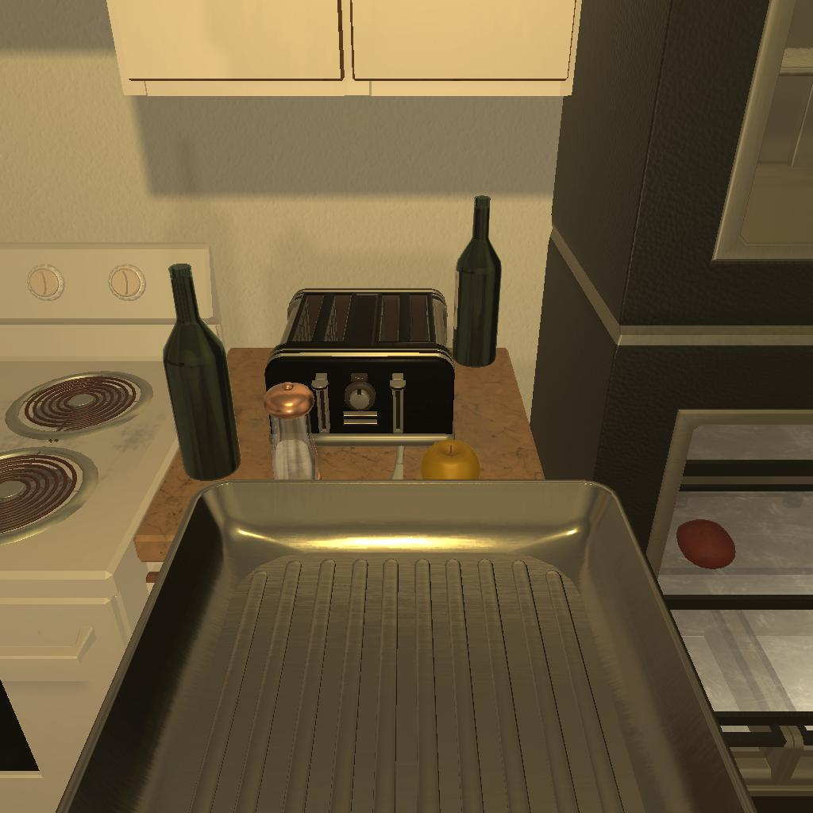

---------------------------------------------------------task: 14---------------------------------------------------------
--------------------------------------------------------------------------------------------------------------------------------------------------------------------
--------------------------------------------------------------------------------------------------------------------------------------------------------------------
Step:--------------------------------------------------------------------------18-------------------------------------------------------------------------------
----------------------------------------
VLM Prompt:
**Task**
Please perform as an embodied AI agent. Our final objective is to put a cool apple in countertop. Below is the plan for completing the task, the current observation, alongside historical data and admissible actions for the next step. Please determine the best action for the next step!
**Plan**
Below is a detailed step-by-step plan to complete the task.
1. Find an apple.
2. Pick up the apple.
3. Find a fridge.
4. Cool the apple with the fridge.
5. Find a countertop.
6. Place the cooled apple on the countertop.
**Current Observation**
Displayed is an image capturing the current position of the agent.
**History Information**
Displayed are the previous observations with their corresponding actions.
Current State 1:
1. Place: Unspecified location with two sinks, a glass, and a curtain
2. Step Index in Plan: 1
3. Objects: Two sinks, a glass, curtain
4. Action: Go to fridge 1
Current State 2:
1. Place: Next to fridge 1
2. Step Index in Plan: Step 2
3. Objects: Fridge 1
4. Action: Open fridge 1
Current State 3:
1. Place: Next to fridge 1
2. Step Index in Plan: 2
3. Objects: Fridge 1, apple
4. Action: Open fridge 1
Current State 4:
1. Place: In front of an open fridge
2. Step Index in Plan: Step 2
3. Objects: Apple, Fridge 1
4. Action: Take apple from fridge 1
Current State 5:
1. Place: In front of an open fridge
2. Step Index in Plan: 4
3. Objects: Apple, Fridge
4. Action: Go to countertop 1
Current State 6:
1. Place: In front of a red microwave
2. Step Index in Plan: 5
3. Objects: Red microwave, numeric keypad, "OFF" display, countertops
4. Action: Go to countertop 2
Current State 7:
1. Place: Countertop
2. Step Index in Plan: 6
3. Objects: Apple, Countertop, Toaster, Wine Bottles
4. Action: Take apple 1 from countertop 2
Current State 8:
1. Place: Countertop
2. Step Index in Plan: 6
3. Objects: Apple, Toaster, Wine Bottles
4. Action: Put apple 1 in/on countertop 2
Current State 9:
1. Place: Countertop
2. Step Index in Plan: 6
3. Objects: Cooled apple, toaster, wine bottles, pan 1
4. Action: No action necessary as the task is already complete with the apple placed on the countertop.
Current State 10:
1. Place: Countertop
2. Step Index in Plan: 6
3. Objects: Apple, Toaster, Wine Bottles
4. Action: Examine pan 1
Current State 11:
1. Place: Countertop
2. Step Index in Plan: 6
3. Objects: Apple, Toaster, Wine Bottles
4. Action: Examine pan 1
Current State 12:
1. Place: Countertop
2. Step Index in Plan: The plan has been fully executed, no step index remains.
3. Objects: Toaster, wine bottles, pan, cooled apple (not visible)
4. Action: Examine pan 1
Current State 13:
1. Place: Countertop with a toaster and wine bottles
2. Step Index in Plan: 6
3. Objects: Cooled apple, pan 1, countertop 2
4. Action: Put pan 1 in/on countertop 2
Current State 14:
1. Place: Not specified in the context
2. Step Index in Plan: 6
3. Objects: Apple, toaster, wine bottles
4. Action: Go to toaster 1
Current State 15:
1. Place: In front of a countertop with a toaster and wine bottles
2. Step Index in Plan: 6
3. Objects: Countertop, apple
4. Action: Go to countertop 2
Current State 16:
1. Place: Countertop
2. Step Index in Plan: Last
3. Objects: Cooled apple, toaster, wine bottles
4. Action: Examine pan 1
Current State 18:
1. Place: Countertop
2. Step Index in Plan: Step 6
3. Objects: Cooled apple, toaster, wine bottles, pan 1
4. Action: Put pan 1 in/on countertop 2
**Admissible Actions**
(1): go to microwave 1
(2): go to countertop 1
(3): go to cabinet 1
(4): go to diningtable 1
(5): go to drawer 1
(6): go to sink 1
(7): go to cabinet 2
(8): go to cabinet 3
(9): go to sinkbasin 1
(10): go to cabinet 4
(11): go to cabinet 5
(12): go to drawer 2
(13): go to toaster 1
(14): go to cabinet 6
(15): go to stoveburner 1
(16): go to cabinet 7
(17): go to fridge 1
(18): go to stoveburner 2
(19): go to stoveburner 3
(20): go to stoveburner 4
(21): go to drawer 3
(22): go to cabinet 8
(23): go to cabinet 9
(24): go to cabinet 10
(25): go to coffeemachine 1
(26): go to cabinet 11
(27): go to garbagecan 1
**Analysis Guideline**
1. Analyze the **History Information** and determine our current step in the plan and our current place.
2. List all visible objects related to the task in the current observation.
3. Analyze the objects in the current observation based on the history and the requirements for the current step, and then determine if we can complete the step with the current observation.
4. Analyze and decide on the most appropriate action to take.
5. Summarize the analysis using the following format: "Analysis: [The summarization of the analysis], The Most Appropriate Action: (i which is the integer.): [Selected action]"
**Notes**
1. We must complete each step of the plan in order and cannot skip steps when the previous ones are not finished.
2. For "Go to" actions listed as "go to xxx [n]", interpret this as there are n distinct actions available: "go to xxx 1", "go to xxx 2", ..., "go to xxx n". Select one specific action from these options instead of using "go to xxx [n]".
3. If receptacles such as drawers, cabinets, and so forth are closed in the current observation, we may try to open them.
4. Pay attention to synonyms and ensure clarity in the terms used.
5. If there is no history available, we are at the first step and the current place is "Unknown".
6. The most appropriate action must be in the **Admissible Actions**, and we cannot generate a new action that is not in the **Admissible Actions**.
**Answer**
Please select the most suitable action by following the **Analysis Guideline**, keeping the above **Notes** in mind.
----------------------------------------
----------------------------------------
VLM Response:
Analysis: The current observation shows the agent is in front of a countertop with a toaster, wine bottles, and an apple. According to the plan, the final objective is to place a cooled apple on the countertop. The history information indicates that the plan has been fully executed; the apple has been cooled and placed on the countertop. However, there's a discrepancy as the history suggests the task is complete, but the current observation still shows an apple on the countertop. It's possible the apple is not the cooled one or the task needs to be confirmed. The most appropriate action is to examine the apple to ensure it's the cooled apple that was intended to be placed on the countertop.
The Most Appropriate Action: (13): go to toaster 1
This action is selected as it is the closest to the apple, which allows for examination and confirmation of the task's completion.
----------------------------------------
----------------------------------------
>>> Refine VLM Response and Get Pure Action: go to toaster 1
This action is selected as it is the closest to the apple, which allows for examination and confirmation of the task's completion
----------------------------------------
-----------------------------------------------------------------
Running time: 16.103174924850464 seconds
Total Money: 7.051369999999995
-----------------------------------------------------------------
-----------------------------------------------------------------
Summarization Prompt:
**Context**
Analysis: The current observation shows the agent is in front of a countertop with a toaster, wine bottles, and an apple. According to the plan, the final objective is to place a cooled apple on the countertop. The history information indicates that the plan has been fully executed; the apple has been cooled and placed on the countertop. However, there's a discrepancy as the history suggests the task is complete, but the current observation still shows an apple on the countertop. It's possible the apple is not the cooled one or the task needs to be confirmed. The most appropriate action is to examine the apple to ensure it's the cooled apple that was intended to be placed on the countertop.
The Most Appropriate Action: (13): go to toaster 1
This action is selected as it is the closest to the apple, which allows for examination and confirmation of the task's completion.
**Summary Format**
1. Place: [Specify the current location]
2. Step Index in Plan: [Dispkay the current step number in the plan before taking the current action]
3. Objects: [List the objects relevant to the task]
4. Action: [Describe the most appropriate action without the "(x)" and keep the integer of the object]
Please analyze the **Context** and summarize the analysis using the **Summary Format**.
-----------------------------------------------------------------
-----------------------------------------------------------------
Summarization Response:
1. Place: In front of a countertop
2. Step Index in Plan: Final step already executed
3. Objects: Toaster, wine bottles, apple
4. Action: Go to toaster 1
-----------------------------------------------------------------
-----------------------------------------------------------------
Text Observation:Nothing happens.
-----------------------------------------------------------------
UNSUCCEED